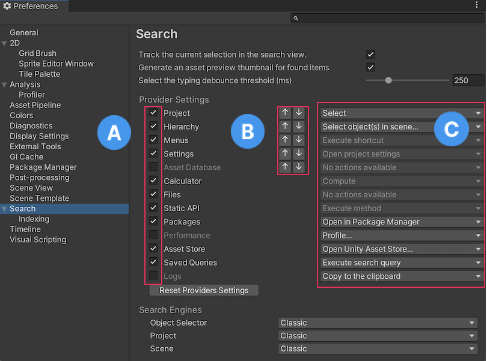

Use preferences to customize the behavior of the Unity Editor.
To open the Preferences window, go to Edit > Preferences (macOS: Unity > Settings) in the main menu.
To navigate the Preferences window, use the search box to filter the list of settings categories and highlight keywords in the details pane on the right of the Preferences window.
The following preference categories are available:
General preferences let you customize the overall behavior for working in Unity.
| Property | Function |
|---|---|
| Load Previous Project on Startup | Enable this setting to always load the previous project at startup. |
| Disable Editor AnalyticsAbbreviation of Unity Analytics See in Glossary |
Enable this setting to stop the Editor automatically sending information back to Unity. Pro only. |
| Auto-save scenes before building | Automatically save your scene before it builds. |
| Script Changes While Playing | Choose the behavior of the Editor when scripts change while your game runs in the Editor:
|
| Code Optimization On Startup | Choose whether to set code optimization mode to Debug or Release when the Editor starts. You can use Debug mode to attach external debugger software, but this mode makes C# performance slower when you run your project in Play mode in the Editor. Release mode gives faster C# performance when you run your project in Play mode in the Editor, but you can’t attach any external debuggers. For more information, refer to Code Optimization Mode. |
| Editor Theme | Select the background theme to use in the Editor:
|
| Editor Font | Select which font to display in the Unity Editor. The default font is Inter. |
| Editor Default Text Rendering Mode | Defines the Editor’s rendering for text. SDF is the default rendering mode.
|
| Editor Text Sharpness | Set how clear and sharp text in the Editor displays. |
| Editor Text Generator Type | Select from:
|
| Device to use | Select which GPU device to use by default, from a list of connected devices. |
| Graph Snapping | Align graph elements with other graph elements when you move them ingraph views. Packages such as ShaderA program that runs on the GPU. More info See in Glossary Graph use graph views. If Graph Snapping is disabled, graph elements move more freely. |
| Open Game View on Play | Open a Game view window when you enter Play mode if a Game view window isn’t open. You can also right-click the Play button on the toolbar to enable this setting. |
| Use Project Path in Window Title | Replace the name of the project in the main window title with the path of the project on disk. |
| Interaction Mode | Specifies how long the Editor can idle before it updates. After one frame finishes, the Editor waits up to the specified amount of time before the next frame begins. This allows you to throttle Editor performance, and reduce consumption of CPU resources and power. For example, if you want to test the Editor’s performance, set this property to No Throttling. If you want to conserve power (for example, to prolong battery life on a laptop computer), set this property to one of the throttled modes. In throttled modes, the Editor stops idling if you interact with it (for example, by panning in the Scene view). Note: In Play mode, Unity ignores any throttling that you apply using this preference. The editor updates as fast as possible unless you enable the VSync option in the Game view, or set Application.targetFrameRate to a value other than -1.Choose from the following modes:
|
| Package Manager log level | Choose the level of detail you want the Package Manager logs to report:
|
| Enable extended Dynamic hints | Select this to enable extended dynamic hints. Extended dynamic hints display more information when a property, object, or tool is hovered on for enough time or when a dynamic hint displays. |
| Perform Bump MapAn image texture used to represent geometric detail across the surface of a mesh, for example bumps and grooves. Can be represented as a heightmap or a normal map. More info See in Glossary Check |
Select this to enable bump map checks upon material imports, which helps check that textures used in a normal mapA type of Bump Map texture that allows you to add surface detail such as bumps, grooves, and scratches to a model which catch the light as if they are represented by real geometry. See in Glossary material slot are actually defined as normal. |
| Timestamp Editor log entries | Add timestamp and thread ID to Editor.log messages. |
| Enable Shortcut Helper Bar | Display the Helper Bar in the status bar at the bottom of the main Editor window. |
| Enable PlayMode Tooltips | Enable tooltips in the Editor while in Play mode |
| Show All Windows in Taskbar | Display secondary undocked Editor windows in the taskbar and Alt+Tab menu. This setting works on Windows only. If you enable this setting, undocked Editor windows minimize to the taskbar and, by default, combine into a single taskbar item. |
| Busy Progress Delay | Set the delay in seconds before the “Unity is busy” progress bar displays. |
| “Don’t ask me again” checkboxes | Select Reset to defaults to reset any dialog boxes you have selected Don’t ask me again to opt out of alerts. |
Settings for how the Hierarchy window is displayed in the Editor.
| Property | Function |
|---|---|
| Default Prefab Mode | Select a prefab in prefab editing mode to use the following settings:
|
| Rename new objects | Rename GameObjectsThe fundamental object in Unity scenes, which can represent characters, props, scenery, cameras, waypoints, and more. A GameObject’s functionality is defined by the Components attached to it. More info See in Glossary on creation. If disabled, Unity assigns newly created GameObjects a default name. |
| Enable Alphanumeric Sorting | Displays a button in the top-right corner of the Hierarchy window to toggle between sorting GameObjects by the default Transform sort, or alphanumeric sort order in the Hierarchy window. This setting isn’t available if you enable Use new Hierarchy window. |
| Use new Hierarchy window | Enables a different view of the Hierarchy window. Important: The New Hierarchy setting is in preview and might change in future versions of Unity. |
| Enable Alternating Row Background | Sets each row in the New Hierarchy window mode to have alternating background colors. |
| Enable Query Builder | Uses auto completion and visual queries in the search field of the new Hierarchy window mode. Disable to use the search in plain text mode. |
The 2D preference settings allow you to define the settings of 2D-related features and packages. When you install 2D related packages (such as the Tilemap Editor package) into your Project, their preference settings will appear in this section.
Use the Physics preferences to configure the 2D physics settings, such as the colors used in the UI.
Set the colors for the following UI elements.
| Property | Function |
|---|---|
| Awake Color (Outline) | Set the color of the ColliderAn invisible shape that is used to handle physical collisions for an object. A collider doesn’t need to be exactly the same shape as the object’s mesh - a rough approximation is often more efficient and indistinguishable in gameplay. More info See in Glossary 2D GizmoA graphic overlay associated with a GameObject in a Scene, and displayed in the Scene View. Built-in scene tools such as the move tool are Gizmos, and you can create custom Gizmos using textures or scripting. Some Gizmos are only drawn when the GameObject is selected, while other Gizmos are drawn by the Editor regardless of which GameObjects are selected. More info See in Glossary’s outline when the RigidbodyA component that allows a GameObject to be affected by simulated gravity and other forces. More info See in Glossary 2D it’s attached to is Awake. |
| Awake Color (Filled) | Set the color of the Collider 2D Gizmo’s interior fill when the Rigidbody 2D it’s attached to is Awake. |
| Asleep Color (Outline) | Set the color of the Collider 2D Gizmo’s outline when the Rigidbody 2D it’s attached to is Asleep. |
| Asleep Color (Filled) | Set the color of the Collider 2D Gizmo’s interior fill when the Rigidbody 2D it’s attached to is Asleep. |
| Bounds Color | Set the color of the bounds for all PhysicsShape2D that a Collider 2D creates. |
Set the colors used for the following UI elements.
| Property | Function |
|---|---|
| Contact Color | Set the color of the Collider 2D Gizmo’s contacts which are displayed as a directional arrow starting at the contact point in the direction of the contact normal. |
| Contact Arrow Scale | Set the scale of the Collider 2D contacts arrow. Larger values draw the arrow larger. |
The Analysis preferences let you define settings for the ProfilerA window that helps you to optimize your game. It shows how much time is spent in the various areas of your game. For example, it can report the percentage of time spent rendering, animating, or in your game logic. More info
See in Glossary. For more information, refer to Profiler Preferences reference.
| Property | Function |
|---|---|
| Frame count | Set the maximum number of frames for the Profiler to capture. You can set this number between 600 and 4,000. Higher number of loaded frames increases memory usage of Unity Editor. |
| Automatic memory management | Automatically manage Profiler memory usage. When the system memory usage is at a critical level and the Profiler uses more than 75% of the Editor memory, Unity discards data until the system memory usage is back to a normal state, or the Profiler uses less than 25% of Editor memory. |
| Show stats for current frame | By default, when you select the Current Frame button and enter Current Frame mode, the frame indicator line doesn’t have annotations with the stats for the current frame. This is because the stats annotations might make it difficult to view data in real-time. To display the annotations, enable this setting. |
| Default recording state | Select which recording state the Profiler should open in. Choose from Enabled, Disabled, or Remember. Enabled keeps the Record button enabled between sessions, while Disbled disables it, regardless of whether you turn it on or off during your profiling session. The Remember state remembers whether you have enabled or disabled the Record button during your session and keeps it at its last state next time you open the Profiler window. |
| Default editor target mode | Select what mode the Target Selection dropdown should target by default. Choose from either Playmode or Editor. |
| Custom connection ID | Enter the connection name that you want to use for the device that’s running your application in the Target Selection drop down in the Profiler Window or Console WindowA Unity Editor window that shows errors, warnings and other messages generated by Unity, or your own scripts. More info See in Glossary. |
| Property | Function |
|---|---|
| Auto Refresh | Enable this setting to import Assets automatically as they change. |
| Import Worker Count % | Set a percentage of available logical CPU cores to use for the Desired Import Worker Count setting. For example, if your system has 16 logical cores and this preference is set to 25%, the Desired Import Worker Count for new projects is set to 4. If you set this value too high, your import worker processes need to compete over other processes and system resources such as reading and writing files. The default value of 25% is suitable for most situations. |
| Directory Monitoring (available only on Windows) | Enable this setting to monitor directories instead of scanning all project files to detect asset changes. |
| Compress Textures on Import | Disable this setting to skip texture compressionA method of storing data that reduces the amount of storage space it requires. See Texture Compression, Animation Compression, Audio Compression, Build Compression. See in Glossary during import. Textures are typically imported into uncompressed formats. |
| Verify Saving Assets | Enable this setting to verify which Assets to save individually. A dialog is shown any time Unity saves any assets. |
| Show Enter Safe Mode Dialog | Enable this setting to display a confirmation dialog before the Editor enters safe mode because of script compilation errors. If you disable this setting, the Editor automatically enters safe mode when it opens a project with compilation errors. |
| Property | Function |
|---|---|
| Default Mode | Define the default setting for the Cache Server, whether to enable or disable it by default. You can override this per Project in the Unity Editor settings. For more information, see Unity Accelerator. |
| Default IP address | Set the default IP address for the Cache Server to use. You can override this per Project in the Unity Editor settings. |
| Check Connection | Click this button to attempt to connect to the remote Cache Server. |
The Colors preferences let you pick colors for various user interface elements in the Unity Editor.
Use this setting to customize color preferences for General settings.
| Property | Function |
|---|---|
| Playmode Tint | The color to tint the editor to for ease of identifying when you’re in Play mode. Unity tints the whole editor with the color you pick here when you enter Play mode. Some operations in the Editor aren’t available when in Play mode, and you can reset some edited values when exiting the Play mode. |
Use this setting to customize color preferences for animated properties.
| Property | Function |
|---|---|
| Property Animated | The color to indicate a property that’s currently being animated. |
| Property Candidate | The color to indicate the animated property that you modified recently. |
| Property Recorded | The color to indicate that an animated property automatically records changes in the animation clipAnimation data that can be used for animated characters or simple animations. It is a simple “unit” piece of motion, such as (one specific instance of) “Idle”, “Walk” or “Run”. More info See in Glossary. |
Use this setting to customize preferences for a Scene.
| Property | Function |
|---|---|
| Background | Set the color for the scene cameraA component which creates an image of a particular viewpoint in your scene. The output is either drawn to the screen or captured as a texture. More info See in Glossary to clear to when the Scene FX skyboxA special type of Material used to represent skies. Usually six-sided. More info See in Glossary setting is turned off. |
| Background for PrefabsAn asset type that allows you to store a GameObject complete with components and properties. The prefab acts as a template from which you can create new object instances in the scene. More info See in Glossary |
Set the color for the scene camera to clear to when the Scene FX skybox setting is turned off. |
| Contribute GI: Off / Receive GI: Light ProbesLight probes store information about how light passes through space in your scene. A collection of light probes arranged within a given space can improve lighting on moving objects and static LOD scenery within that space. More info See in Glossary |
Set the color to display when ContributeGI is disabled in the GameObject’s Static Editor Flags. |
| Contribute GI: On / Receive GI: Light Probes | Set the color to display when ContributorGI is enabled in the GameObject’s Static Editor Flags, and the Renderer’s ReceiveGI property is set to LightmapsA pre-rendered texture that contains the effects of light sources on static objects in the scene. Lightmaps are overlaid on top of scene geometry to create the effect of lighting. More info See in Glossary. |
| Contribute GI: On / Receive GI: Lightmaps | Set the color to display when ContributeGI is enabled in the GameObject’s Static Editor Flags, and the Renderer’s ReceiveGI property is set to Light Probes. |
| Grid | Set the color of the grid in the Scene view. |
| Guide Line | Set the color of the Guide Line in the Scene view. |
| Material Validator Pure Metal | Set the color for the Validate Albedo/Metal Specular debug render mode to indicate the material properties. |
| Material Validator Value Too High | Set the color for the Validate Albedo/Metal Specular debug render mode to indicate when the material value is too high. |
| Material Validator Value Too Low | Set the color for the Validate Albedo/Metal Specular debug render mode to indicate when the material value is too low. |
| Selected Axis | Set the color for the selected handle to show highlighted in, when Move, Rotate, or the Scale tool is engaged. |
| Selected Children Outline | Set the outline color for the children of the selected objects. |
| Selected Material Highlight | Set the outline color that shows when clicking on a meshThe main graphics primitive of Unity. Meshes make up a large part of your 3D worlds. Unity supports triangulated or Quadrangulated polygon meshes. Nurbs, Nurms, Subdiv surfaces must be converted to polygons. More info See in Glossary in the MeshRenderer to ping the submesh in the Scene view. |
| Selected Outline | Set the outline color for the selected GameObjects. |
| UI Collider Handle | Set the color to use for the Unity UI’s padding visualization. |
| Volume Gizmo | Set the color to indicate the audio sourceA component which plays back an Audio Clip in the scene to an audio listener or through an audio mixer. More info See in Glossary in Gizmo. |
| Wireframe | Set the color of the wireframe when the wireframe render mode is active. |
| Wireframe Overlay | Set the color of the wireframe when the textured wireframe render mode is active. |
| Wireframe Selected | If you’ve enabled Selection Wire in the Gizmo options, then the selected wireframes appear in the color that you set here. |
| X Axis | The color that you set here is indicated for any built-in transform tool handle affecting x-axis. |
| Y Axis | The color that you set here is indicated for any built-in transform tool handle affecting y-axis. |
| Z Axis | The color that you set here is indicated for any built-in transform tool handle affecting z-axis. |
When you report a problem to Unity, the Unity Support Team might need you to enable diagnostic switches to help identify the cause. Running diagnostics on an application, whether in the Editor or a player, impacts performance and user experience. You should only run diagnostics when the Unity Support Team requires them.
If diagnostic switches are active in your application, Unity shows a warning in the console. To reset switches, in the Editor Diagnostics tab, click Reset all.
If an active diagnostic switch prevents the Unity Editor from opening, use the --reset-diagnostic-switches parameter to reset all switches from the command line. For more information on using command line arguments at launch, see Command line arguments.
Use the Display Settings preferences to customize the behavior of the Game view for attached monitors.
| Property | Function |
|---|---|
| Sort Display Order (Windows Only) | Enable this setting to sort the display numbers of the attached monitors by distance to the main display. Note that this setting works on Windows only. |
| Show notification when entering fullscreen | Enable this to display a notification in fullscreen mode to view the shortcut required (CTRL+SHIFT+F7) to exit the fullscreen mode in Game view. When disabled, the shortcut notification to exit the fullscreen mode doesn’t appear. |
| Show game view toolbarA row of buttons and basic controls at the top of the Unity Editor that allows you to interact with the Editor in various ways (e.g. scaling, translation). More info See in Glossary on Fullscreen |
When enabled, the Game view Control Bar that contains game objects like gizmos and stats is visible on the fullscreen mode. |
| Standalone simulation monitor mapping | Displays the number of standalone monitors mapped to your device. |
Use the External Tools preferences to set up external applications for scripting, working with images, and source control.
| Property | Function |
|---|---|
| External Script Editor | Choose the application Unity uses to open script files. Unity automatically passes the correct arguments to script editors it has built-in support for. Unity has built-in support for Visual Studio Community, Visual Studio Code (VSCode) and JetBrains Rider. The Open by file extension option uses your device’s default application for the relevant file type when you open a file. If no default application is available, your device opens a window that prompts you to choose an application to use to open the file. |
| Generate .csproj files | Select which items Unity should generate .csproj files for. These files contain descriptive data or metadata in an XML format. This data might include versioning information, platform requirements, build files, or database settings.When these files are present, code editors can use the data they contain to provide useful features like highlighting potential compilation errors. You can enable generation for the following items:
|
| Image application | Choose which application you want Unity to use to open image files. |
| Revision Control Diff/Merge | Choose which application you want Unity to use to resolve merge conflicts and view file differences in your source control repository. Unity detects these tools in their default installation locations. For more information, refer to Diff tool support. |
The Global IlluminationA group of techniques that model both direct and indirect lighting to provide realistic lighting results.
See in Glossary (GI) system uses a cache on each computer to store intermediate files used to pre-compute real-time Global Illumination. All projects on the computer share the cache.
| Property | Function |
|---|---|
| Maximum Cache Size (GB) | Use the slider to set the maximum GI cache folder size. Unity keeps the GI cache folder size below this number whenever possible. Unity periodically deletes unused files to create more space (deleting the oldest files first). This is an automatic process, and doesn’t require you to do anything. Note: If the current Scene is using all the files in the GI cache, increase your cache size. Otherwise, resource-intensive recomputation occurs when baking. This can happen when the Scene is large or the cache size is too small. |
| Custom cache location | Enable this option to allow a custom location for the GI cache folder. By default, the GI cache is stored in the Caches folder. All Projects share the cache folder. Tip: Storing the GI Cache on an SSD drive can speed up baking in cases where the baking process is I/O bound. |
| Cache Folder Location | Click the Browse button to specify a location for the cache. |
| Cache compression | This option enables Unity to compress datafiles in the GI cache to use less hard drive space. The datafiles are LZ4-compressed by default, and the naming scheme is a hash and a file extension. Unity computes the hashes based on the inputs to the lighting system, so changing any of the following settings, properties or assets can lead to lighting recomputation: - Materials (Textures, Albedo, Emission) - Lights - Geometry - Static flags - Light Probe groups - Reflection probes - Lightmap Parameters Tip: If you need to access the raw Enlighten Realtime Global Illumination data, disable Cache Compression and clear the cache. |
| Clean Cache | Use this button to clear the cache directory. It’s not safe to delete the GI Cache directory manually while the Editor is running. This is because the Editor creates the GiCache folder when it starts and maintains a set of references to those files. The Clean Cache button ensures that the Editor releases all references to the files on disk before they’re deleted. |
| Cache size is | Displays the current size of the cache. |
| Cache Folder Location | Displays the current cache folder location. |
Use the job system to write simple and safe multithreaded code so that your application can use all its available CPU cores to execute code. The job system can improve the performance of your application.
| Property | Function |
|---|---|
| Use Job Threads | Disable Use Job Threads to run all jobs on the main thread. If you’re debugging and want to simplify the problem space and remove all parallelism, you can disable Use Job Threads to run all jobs immediately on the main thread when they are scheduled. Disabling Use Job Threads has the same effect as if you set JobsUtility.JobWorkerCount to 0. Use Job Threads is enabled by default when the Editor restarts. |
| Enable Jobs Debugger | Disable Enable Jobs Debugger to remove the job system safety system checks which detect potential race conditions and prevent the bugs they can cause. Disable Enable Jobs Debugger if you want to monitor performance without the overhead of job system safety checks. Enable Jobs Debugger is enabled by default when the Editor restarts. |
Select a mode for leak detection. Leak detection checks if allocations that are made with MallocTracked are freed with FreeTracked. If you do not free unmanaged memory, you will cause memory leaks which have a negative effect on memory usage and reduce performance. Memory leaks persist across domain reloads in the Editor.
In the Editor and development builds, Enabled is selected by default. In non-development builds, Disabled is the default mode for Leak Detection Level.
| Property | Function |
|---|---|
| Disabled | Do not detect unmanaged memory leaks. |
| Enabled | Perform a lightweight count of all memory leaks for each leak category. This option only prints the number of leaks as part of the domain unload process. Use the Enabled With Stack Trace leak detection mode to find detected leaks. |
| Enabled With Stack Trace | Leak Detection reports the callstack of any MallocTracked allocation that is not deallocated with FreeTracked. Enabled With Stack Trace can add a performance cost to allocations. Only use Enabled With Stack Trace to intentionally track native memory leaks. Enabled With Stack Trace, like Enabled, reports leaks as part of the domain unload process. You can only select Enabled With Stack Trace in the Editor and in development builds. |
Use the Package Manager preferences to change the default cache location for the following packages:
| Property | Function |
|---|---|
| Packages | Set the cache location that determines where packages installed from the Unity Registry are stored. For more information, see Customizing the global cache. |
| My Assets | Set the cache location that determines where packages downloaded from the Asset StoreA growing library of free and commercial assets created by Unity and members of the community. Offers a wide variety of assets, from textures, models and animations to whole project examples, tutorials and Editor extensions. More info See in Glossary are stored. For more information, see Customize the Asset Store cache location. |
Use the Scene View preferences to customize object placement and visibility while editing.
| Property | Function |
|---|---|
| Create Objects with Constrained Proportions | Define the default behavior for Scale in the Transform component. When enabled, changing a GameObject’s scale on any axis changes the other axes by the same amount. You can disable and enable this option for individual GameObjects in the InspectorA Unity window that displays information about the currently selected GameObject, asset or project settings, allowing you to inspect and edit the values. More info See in Glossary window. |
| Auto-hide gizmos | Enable to hide the gizmos of components collapsed in the Inspector. |
| Refresh the Scene view only when the Editor is in focus | Enable to ignore the “Always Refresh” flag on the Scene view when the Editor is not the foregrounded application. |
| Line Thickness | Set the line thickness of your transform tools. |
| Enable filtering while searching | Enable to gray out any non-matching items in the Scene view. Enabled by default. |
| Enable filtering while editing LODThe Level Of Detail (LOD) technique is an optimization that reduces the number of triangles that Unity has to render for a GameObject when its distance from the Camera increases. More info See in Glossary groups |
Enable to gray out other objects in the scene while editing level of detail (LOD) groups. Enabled by default. |
Select where newly created 3D objectsA 3D GameObject such as a cube, terrain or ragdoll. More info
See in Glossary are placed in the scene.
| Property | Function |
|---|---|
| World Origin | Instantiate new 3D objects at world coordinates 0,0,0. |
| Scene Intersection | Instantiate new 3D objects at the nearest collider in the center of the Scene view. If no collider is hit, then the 3D object is instantiated at the scene pivot. |
| Scene Pivot | Instantiate new 3D objects at the scene pivot. |
Use the Search preferences to set your search preferences for the Editor.
Tip: You can also access the Search preferences in one of the following ways:
Enter ? (question mark) in the search field and select Open Search Preferences from the results.
From More Options (:) in the top-left of the Search window, select Preferences.

Search Preferences
| Setting | Function |
|---|---|
| Track the current selection in the search | Enable this setting to execute the SearchProvider.trackSelection callback each time the Search selection changes.The callback pings Assets in the Project window or Hierarchy window, which can slow Search navigation in large Projects. |
| Generate an asset preview thumbnail for found items | Enable this setting to display thumbnails for items that are currently visible in the results pane of the Search window. When you disable this setting, Search displays a generic icon. This is useful in large Projects, where generating icons can slow Search navigation. |
| Select the typing debounce threshold (ms) | The debouncing threshold is the time the system waits for the user to finish typing before executing the search. |
| Reset Priorities | Resets all providers to their default on/off state and priority. |
| Search Engines | Set the search fields in the Object Selector, ProjectIn Unity, you use a project to design and develop a game. A project stores all of the files that are related to a game, such as the asset and Scene files. More info See in Glossary, and SceneA Scene contains the environments and menus of your game. Think of each unique Scene file as a unique level. In each Scene, you place your environments, obstacles, and decorations, essentially designing and building your game in pieces. More info See in Glossary to one of the available search engines. Classic - The original search functionality. Advanced - The latest version of Search for Unity (formerly QuickSearch). |
| Setting | Function |
|---|---|
| A [Provider Toggles] | Enable and disable providers. When you disable a provider, Search ignores it when executing searches. |
| B [Provider Order] | Use these settings to modify the order in which search items are shown on the screen. All items of a given provider priority appear before any lower priority items. |
| C [Default Actions] | Use these settings to choose the default actions to execute when you select (for example, double-click) an item in the search results. |
Set the Custom index pages by selecting them or deselecting them from the Custom Indexers dropdown list.
Some Asset Store or Unity packages add their own custom preferences to the Preferences window. Typically, these use the package name as the preferences category. In this example, you can see the Cinemachine package preferences:
For information about a specific package’s preferences, see the documentation for that package. This section contains documentation for standard Unity preferences only.